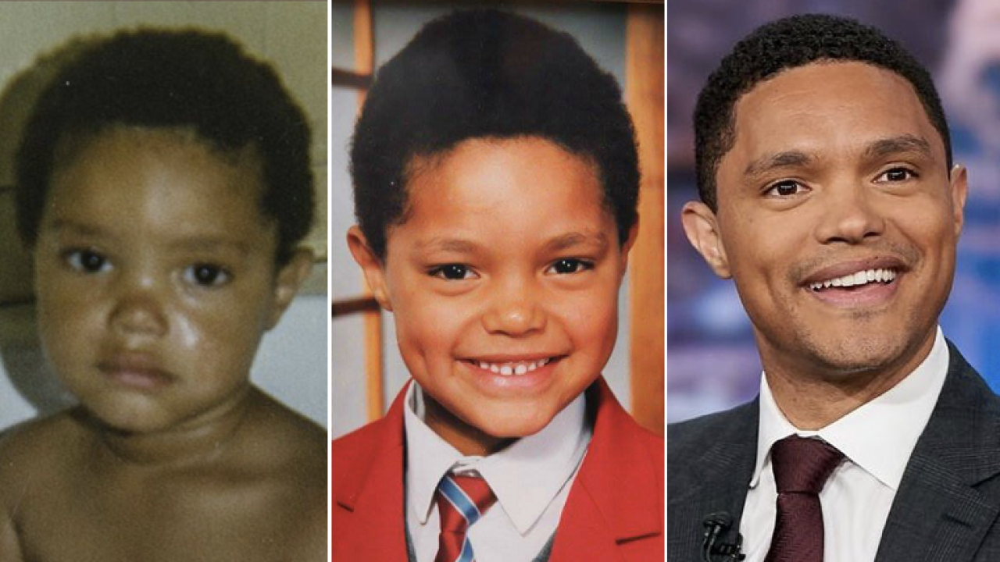

TREVOR NOAH
BIOGRAPHY
Trevor Noah (born 20 February 1984) is a South African comedian, writer, producer, political commentator, actor, and former television host. He was the host of The Daily Show, an American late-night talk show and satirical news program on Comedy Central, from 2015 to 2022. Noah has won various awards, including a Primetime Emmy Award from 11 nominations. He was named one of "The 35 Most Powerful People in New York Media" by The Hollywood Reporter in 2017 and 2018. In 2018, Time magazine named him one of the hundred most influential people in the world. In 2023, he won the Erasmus Prize.
Early Life & Education
Trevor Noah was born on 20 February 1984, in Johannesburg, Transvaal (now Gauteng), South Africa. His father, Robert, is Swiss-German, and his mother, Patricia Nombuyiselo Noah, is Xhosa. Under apartheid legislation, Noah's mother was classified as Black, and his father was classified as White. Noah himself was classified as Coloured. At the time of his birth, his parents' interracial relationship was illegal, which Noah highlights in his autobiography. Interracial sexual relations and marriages were decriminalised a year after his birth, when the Immorality Act was amended in 1985. Patricia and her mother, Nomalizo Frances Noah, raised Trevor in the black township of Soweto. Noah began his schooling at Maryvale College, a private Roman Catholic primary and high school in Maryvale, Gauteng, a suburb of Johannesburg.
Career
In 2002, Noah made a brief appearance on the South African soap opera Isidingo. He later hosted his own radio show called Noah's Ark on YFM, a popular youth radio station in Gauteng. At the age of 21, he took up a dare from his friends to perform a comedy routine at a nightclub. His performance, filled with humorous stories about his life and friends, was well-received, and he continued to perform at comedy clubs, gaining recognition in the process. He decided to focus on comedy, leaving his radio show and acting behind. Along the way, he performed with various South African and international comedians, including David Kau, Gabriel Iglesias, and Russell Peters.
Noah also ventured into television hosting. He hosted several shows in South Africa, such as Run the Adventure, The Real Goboza, and Siyadlala. He also co-hosted The Amazing Date and participated as a contestant in Strictly Come Dancing. Additionally, he hosted award shows like the South Africa Film and Television Awards and the South African Music Awards. Noah became a spokesperson for Cell C, a major mobile phone network provider in South Africa. His stand-up comedy performances included appearances in The Blacks Only Comedy Show, the Heavyweight Comedy Jam, and various comedy festivals. He released several stand-up comedy specials in South Africa, including The Daywalker, Crazy Normal, That's Racist, and It's My Culture.
In 2011, he moved to the United States and made history as the first South African stand-up comedian to appear on The Tonight Show and Late Show with David Letterman. He was the subject of the documentary You Laugh But It's True and starred in the one-man comedy show Trevor Noah: The Racist. He also served as the Roastmaster in a Comedy Central Roast and appeared in comedy panel shows like QI and 8 Out of 10 Cats. Noah's career took a major turn when he joined The Daily Show as a recurring contributor in 2014. In 2015, he succeeded Jon Stewart as the host of the show. While his tenure as host initially faced some criticism and a decline in viewership, Comedy Central stood behind him, emphasizing his talent and the show's popularity among millennials. In addition to his work on The Daily Show, Noah developed and produced other shows, including The Opposition with Jordan Klepper and the docuseries Klepper. He also signed a multiyear contract with Viacom and launched his own production company called Day Zero Productions.
Noah has been known for making controversial statements and jokes, such as his comments about the French national football team and his tweets that were criticized as being misogynistic or mocking certain groups. These incidents have sparked debates and discussions about his comedic style and the boundaries of humor.
Aside from his television career, Noah has written a memoir called Born a Crime, which received positive reviews and became a bestseller. A film adaptation of the book starring Lupita Nyong'o as his mother was announced. He also co-authored a book titled The Donald J. Trump Presidential Twitter Library, featuring a collection of Trump's tweets.
Noah has appeared in TV series like Nashville and movies like Black Panther, Coming 2 America, and American Vandal. He has hosted the Grammy Awards multiple times and served as the host of the White House Correspondents' Dinner.
In 2023, Noah launched a weekly podcast called "What Now? with Trevor Noah" on Spotify, where he discusses various topics.